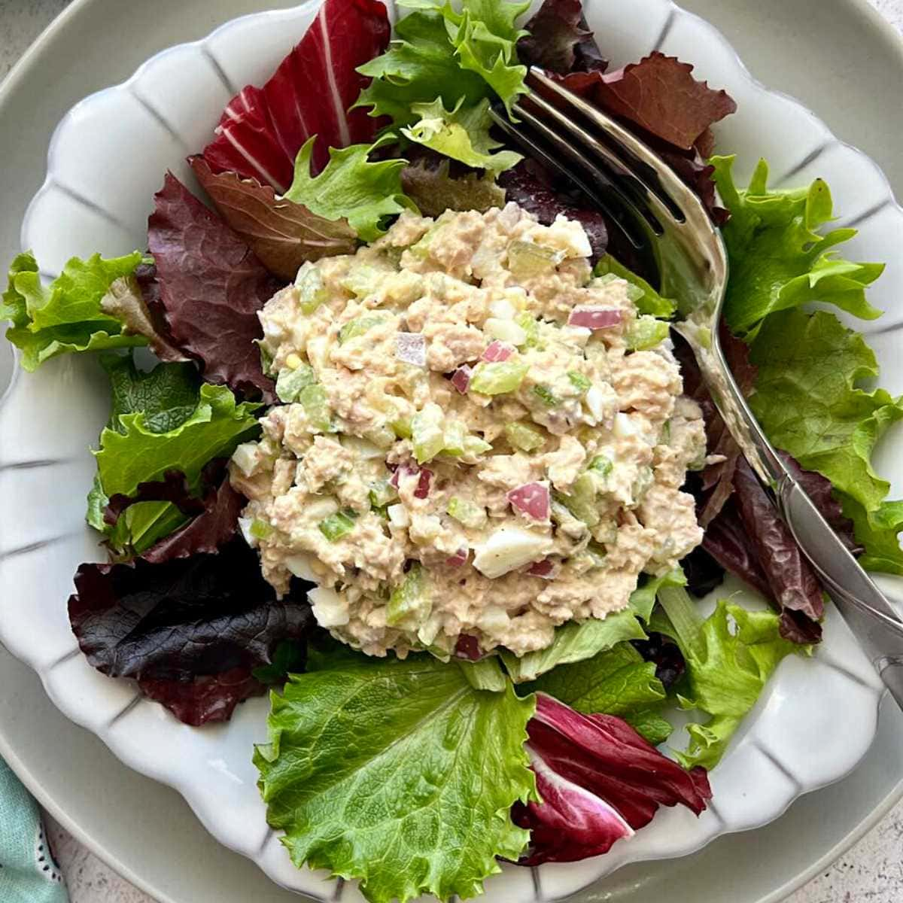

Home
Tuna Salad

The Tuna salad - it's one of the oldest dishes in the book, yet it still goes on as one of the best healthy quick meals for the day. With a mixture of preferences from people around the world, the tuna salad will never disappoint.
Ingredients
- Canned Tuna
- A choice of salad (we will be using baby tomatoes, sweetcorn, and lettuce)
- Mayo (if preferred)
Instructions
- First, get a kitchen knife and chop up the tomatoes to mix into the salad
- Second, open the tuna and put it all into a mixing bowl
- Third, open the sweetcorn and empty into the same bowl
- Fourth, add some mayo for more substance
- Then, lay out some lettuce on your plate
- Finally, add your tuna mix and your tomatoes
And enjoy